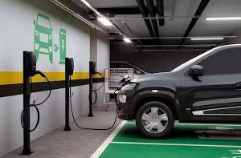

Educação Ambiental
Cuidar do planeta é responsabilidade de todos!
Cuidar do planeta é responsabilidade de todos!

A energia elétrica é a força invisível que sustenta quase todos os aspectos da nossa vida contemporânea. Ela ilumina nossas noites, conserva nossos alimentos e nos mantém conectados globalmente em tempo real. No contexto da sustentabilidade, a eletricidade assume um papel ainda mais protagonista: ela é o meio pelo qual transformamos as fontes renováveis, como o sol e o vento, em uma forma de energia prática e utilizável que move desde pequenos aparelhos até frotas de veículos elétricos.
A transição para uma matriz elétrica limpa é um dos maiores desafios e, ao mesmo tempo, uma das maiores esperanças da nossa geração. Ao eletrificarmos nossos sistemas de transporte e indústria, substituindo combustíveis fósseis por eletricidade gerada de forma consciente, estamos dando um passo gigantesco para a descarbonização do planeta. Mas a tecnologia é apenas metade da solução; o uso inteligente e eficiente dessa energia é o que garante que os recursos naturais sejam preservados.
Cada vez que escolhemos equipamentos mais eficientes ou apagamos uma lâmpada desnecessária, estamos valorizando o esforço global por um ambiente mais equilibrado. A energia elétrica não é apenas um serviço; é um recurso precioso que, quando gerado com respeito à natureza e consumido com consciência, torna-se a base para um futuro onde o progresso humano e a preservação ambiental caminham finalmente de mãos dadas.